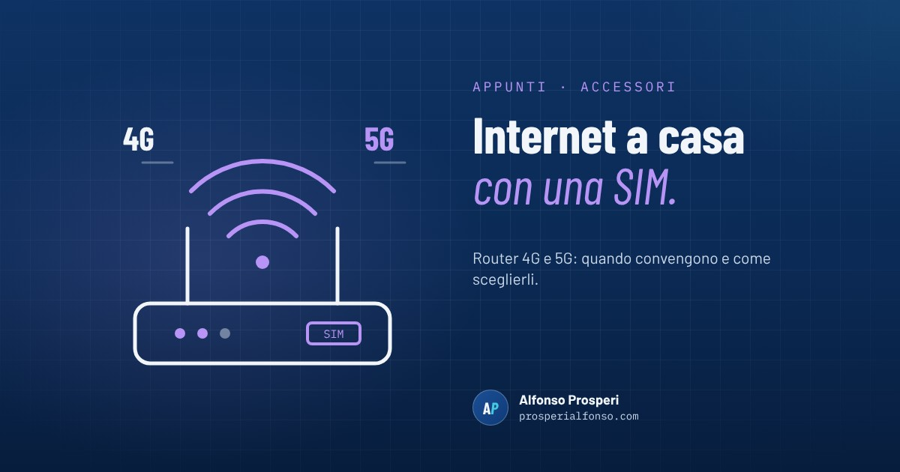

Quando la linea di casa è lenta, quando la fibra non arriva o quando serve internet in una casa al mare per pochi mesi, un router 4G o 5G può essere la soluzione più semplice: si inserisce una SIM, si accende e il Wi-Fi è pronto, senza tecnico e senza linea fissa.
Cos'è e come funziona
È un router come quello di casa, ma invece di collegarsi alla presa del telefono usa la rete mobile, proprio come uno smartphone. La connessione arriva dall'antenna dell'operatore più vicina e il router la distribuisce in Wi-Fi a computer, TV e telefoni. Ce ne sono di due tipi:
- da tavolo, da tenere in casa, spesso con porte per il cavo di rete;
- portatili (le cosiddette "saponette"), con batteria, comodi in viaggio o in vacanza.
Simile, ma non uguale, è la connessione FWA: in quel caso l'operatore installa un'antenna sul tetto o sul balcone e la connessione viaggia via radio fino alla sua stazione. È una buona alternativa nelle zone dove la fibra non arriva.
Quando conviene
- se nella tua zona la linea fissa è lenta o la fibra non è ancora disponibile;
- per una seconda casa o un periodo breve, senza contratti lunghi;
- come linea di riserva quando quella principale si guasta;
- se ti sposti spesso e vuoi un Wi-Fi tuo, con un modello portatile.
I limiti da conoscere
- La velocità dipende dalla copertura e da quante persone usano la stessa antenna: la sera può calare.
- Con la fibra vera la connessione resta in genere più stabile e veloce.
- Molte offerte hanno un limite di traffico: una famiglia che guarda film in streaming consuma in fretta decine di giga.
Come scegliere
- Verifica la copertura al tuo indirizzo, sulle mappe degli operatori e sulla mappa ufficiale dell'AGCOM.
- 4G o 5G? Se in zona c'è il 5G, un router 5G va più veloce; altrimenti un buon 4G è sufficiente e costa meno.
- Prese per antenna esterna: utili in campagna o dove il segnale è debole.
- Wi-Fi recente (Wi-Fi 6) e almeno una porta di rete per TV o computer.
- Per i portatili, guarda la durata della batteria.
Per la SIM, scegli un'offerta con giga illimitati o molto abbondanti e leggi le condizioni: alcune offerte pensate per lo smartphone non sono adatte a un uso intenso da casa.
Un trucco per andare più veloce
Metti il router in alto e vicino a una finestra, possibilmente dal lato dove si trova l'antenna dell'operatore. Spostarlo di pochi metri può cambiare molto la velocità: fai qualche prova con un test di velocità prima di scegliere il posto definitivo.